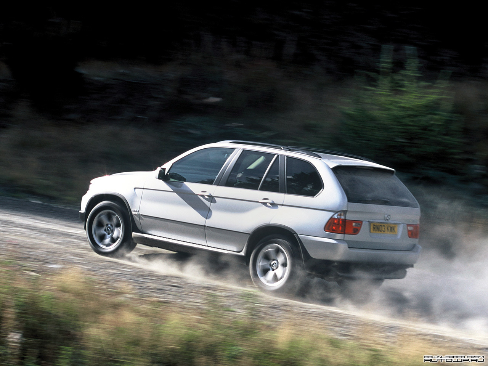
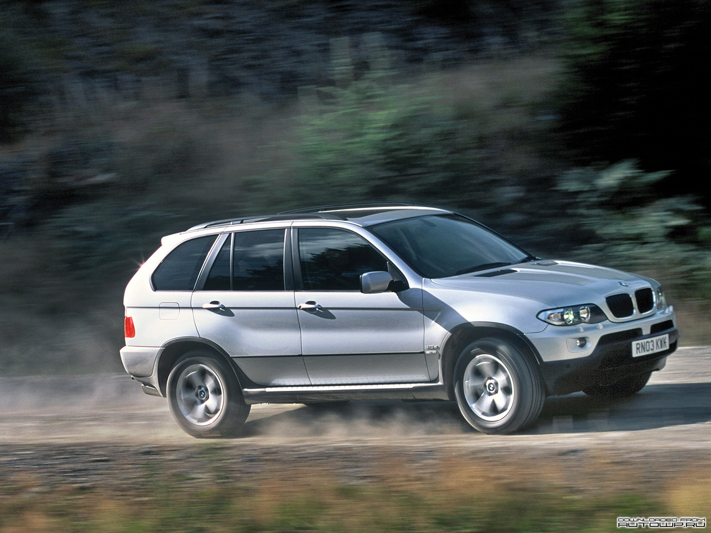

БМВ Х5 (Е70)
BMW X5 (E70) 2013 модельного года имеет великолепные технические характеристики, которые достигаются благодаря новым мощным силовым агрегатам, которых в линейке внедорожника насчитывает пять. Из которых два двигателя являются бензиновыми и три дизельных силовых агрегата. С двигателями работает одна единственная коробка передач, это 8-ми ступенчатый автомат, который используется на всех внедорожниках компаний Audi и Volkswagen.
/BMW_X5_E53_pic_63384.jpg)
- 
- 
Все они без исключения делают автомобиль очень динамичным, на нем можно быстро передвигаться по городу, благодаря удобному и качественному управлению, даже при сложном движении на дороге, можно хорошо маневрировать на любого качества дорожном покрытии.
Если расматривать тяговую динамику, то можно сказать, что внедорожник является спортивным автомобилем, мощные двигатели обеспечивают невероятно быстрый разгон до 100 км/ч, а максимальная скорость при этом может достигать от 210 до 250 км/ч у разных версий с разными двигателями.
Насчет проходимости никаких проблем нет, внедорожник обладает большим дорожным просветом в 222 мм, также имеет неплохие углы въезда и выезда. Независимая пружинная подвеска спереди и сзади, обеспечивает хорошую проходимость на бездорожье.
Также можно заметить достаточно большое потребление у бензиновых двигателей, которое может достигать 14 литров на 100 км пути, у дизельных версий этом показатель намного ниже. Более подробно о технических характеристиках БМВ Х5 Е70 в таблице 1 и 2 ниже: